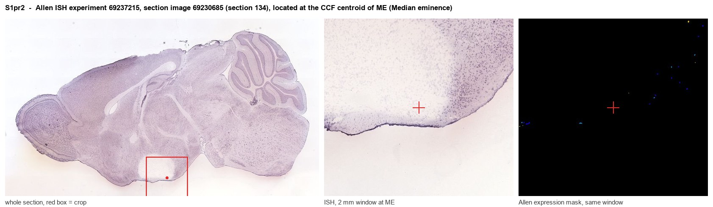
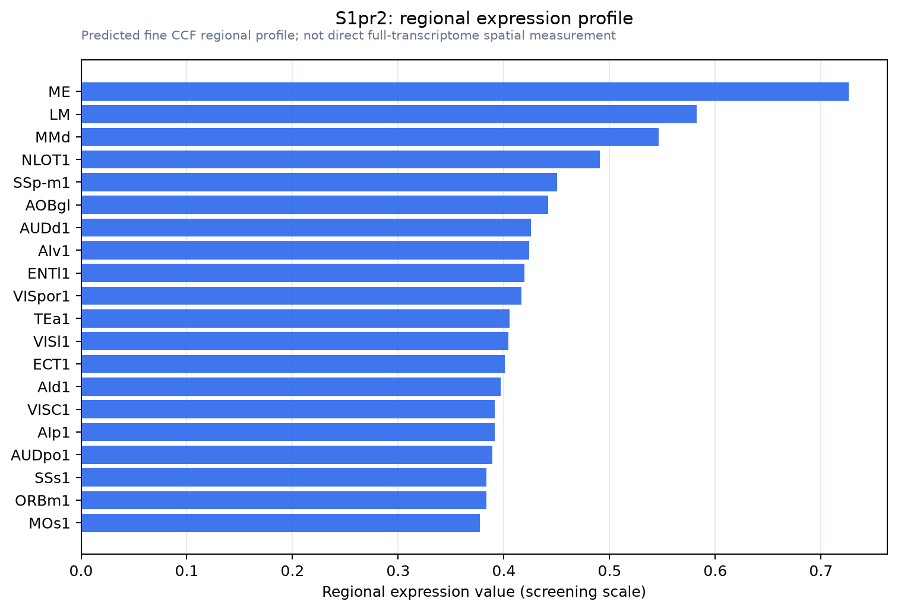

S1pr2
Sphingosine 1-phosphate receptor 2 (S1P receptor 2) (S1P2) (Endothelial differentiation G protein-coupled receptor 5) (Lysophospholipid receptor B2) (Sphingosine 1-phosphate receptor Edg-5) (S1P recep
Spatial tier: REGION_BIASED · Class: GPCR · Top region: ME (Median eminence) · Positive regions: 45/554
Function in ME: evidence, prediction, innovation
- Gene function
- S1pr2 encodes sphingosine-1-phosphate receptor 2, a GPCR coupling to G12/13-RhoA-ROCK, Gq and Gi. Unlike S1PR1, which strengthens endothelial junctions, S1PR2 destabilises them, driving cerebrovascular permeability, MMP-9 activation and haemorrhagic transformation after stroke. It is also required for inner-ear function: recessive human variants cause deafness and knockout mice show altered neuronal excitability.
- Region function
- The median eminence is a circumventricular organ whose fenestrated portal capillaries and tanycyte endfeet form a deliberately leaky interface for releasing hypophysiotropic hormones and sampling blood-borne signals.
- Published in this region
- inferred No region-specific literature found. The closest evidence is that brain S1PR2 immunoreactivity is confined to microvascular endothelium, where it is induced by ischaemia and required for loss of cerebrovascular integrity (Kim 2015), and that endothelial and pericyte S1PR2 govern barrier permeability after injury (Cheng 2024). Allen ISH places ME below the grey-matter mean (0.16 versus 0.90, experiment 69237215), so a sparse vascular source is the likely origin of the hit.
- Predicted function
- Prediction: median eminence S1PR2 sits on fenestrated portal endothelium and pericytes, where S1P-G12/13-RhoA signalling maintains the constitutively permeable, MMP-permissive state distinguishing this bed from barrier-forming capillaries. Endothelial deletion or local JTE-013 should tighten the vasculature, restrict leptin and other cues entering the mediobasal hypothalamus and blunt fasting-induced barrier plasticity, measurable as reduced tracer extravasation.
- Innovation
- ★★★★☆ 4/5 S1PR2 is a well-characterised barrier-destabilising receptor but has never been examined in the one brain vascular bed required to stay leaky.
- Tools
- S1pr2 knockout mice, used in stroke phenotyping (MacLennan 2001; Kim 2015); selective antagonist JTE-013 and agonist CYM-5478; AAV-mediated endothelial S1pr2 overexpression (Cheng 2024); S1PR2 antibodies.
- References
Direct evidence located at the region

Allen ISH experiment 69237215, section image 69230685 (section 134): the section that contains the CCF centroid of Median eminence according to the Allen image-to-atlas alignment (reference_to_image), with a 2 mm window around that point. Left: whole section, red box = window. Middle: ISH signal. Right: Allen's expression-mask view of the same window. open this image in the Allen viewer
Direct spatial evidence

Regional expression figure

Predicted WMB × fine-CCF profile; not direct full-transcriptome spatial measurement.
Spatial profile
Evidence and specificity
- Evidence status
- PREDICTED_FINE
- Direct sources
- None; predicted localization only
- Exclusive threshold
- 12 positive regions out of 554
- Spatial specificity
- 0.290
- Top-region fraction
- 0.047
- Filter status
- PASS
Interpretation limits
- Cell-type-to-region projection is imputed expression, not direct spatial measurement.
- Adult reference atlases do not establish stability across age, sex, strain, state, or disease.
- Transcript abundance does not guarantee protein abundance or genetic-tool performance.